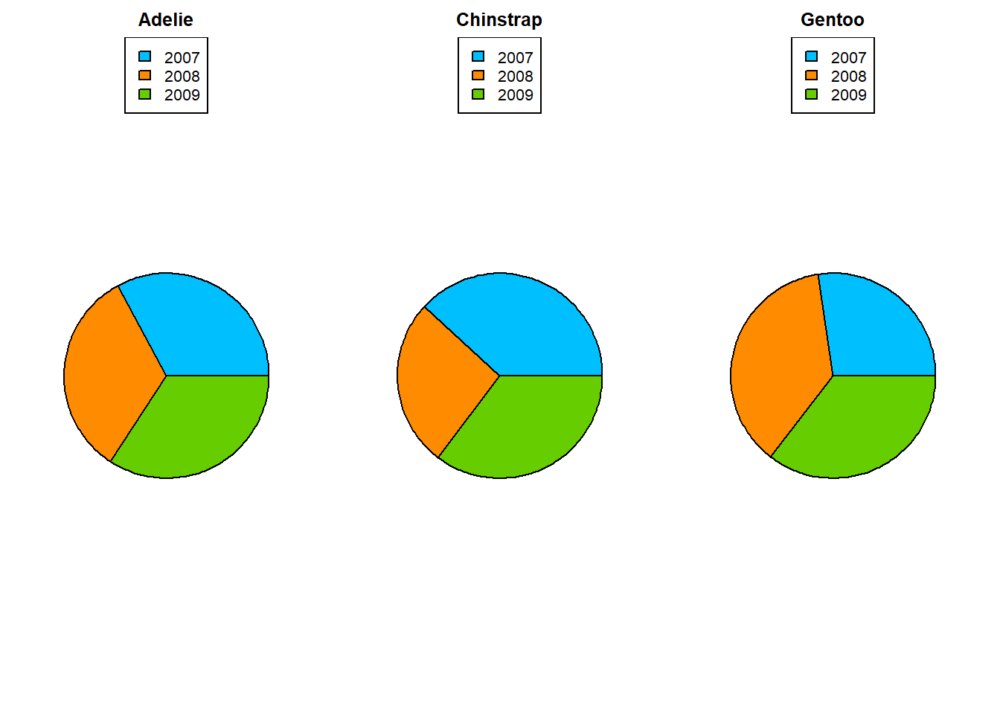

Warning: package 'palmerpenguins' was built under R version 4.2.3Entrega 1
Este es el repositorio de GitHub dónde se puede encontrar todo el trabajo realizado en este proyecto.
Hay 344 observaciones de pingüinos, y 8 variables diferentes.
Vamos a estudiar cada una de las variables:
Primero de todo, veamos qué variables tenemos:
[1] "bill_depth_mm" "bill_length_mm" "body_mass_g"
[4] "flipper_length_mm" "island" "sex"
[7] "species" "year" Ahora hacemos un estudio de cada una de las variables.
Species
Es una variable del tipo ´r clasevariable´. Hace referéncia a la especie del pingüino.
Adelie Chinstrap Gentoo
152 68 124 Podemos observar que hay 3 especies diferentes, “Adelie”, “Chinstrap” y “Gentoo”.
Island
Es una variable del tipo ´r clasevariable´. Hace referéncia a la isla en la que habitan los pingüinos
Biscoe Dream Torgersen
168 124 52 Podemos observar que hay 3 islas diferentes, “Biscoe”, “Dream” y “Torgersen”.
Bill_length_mm
Es una variable del tipo ´r clasevariable´.
Min. 1st Qu. Median Mean 3rd Qu. Max. NA's
32.10 39.23 44.45 43.92 48.50 59.60 2 Hace referencia a la longitud del pico de los pingüinos, en mm. Va en un rango de 32.1mm a 59.6mm. Con una media de 43.92mm, con 44.45mm de mediana, y una desviación típica de 5.46.
Bill_depth_mm
Es una variable del tipo ´r clasevariable´.
Min. 1st Qu. Median Mean 3rd Qu. Max. NA's
13.10 15.60 17.30 17.15 18.70 21.50 2 Hace referencia a la amplitud del pico de los pingüinos, en mm. Va en un rango de 13.1mm a 21.5mm. Con una media de 17.15mm, con 17.30mm de mediana y una desviación típica de 1.97.
Flipper_length_mm
Es una variable del tipo ´r clasevariable´.
Min. 1st Qu. Median Mean 3rd Qu. Max. NA's
172.0 190.0 197.0 200.9 213.0 231.0 2 Hace referencia a la longitud de las aletas de los pingüinos, en mm. Va en un rango de 172.0mm a 231.0mm. Con una media de 200.9mm, con 197mm de mediana y una desviación típica de 14.06.
Body_mass_g
Es una variable del tipo ´r clasevariable´.
Min. 1st Qu. Median Mean 3rd Qu. Max. NA's
2700 3550 4050 4202 4750 6300 2 Hace referencia al peso de los pingüinos, en g. Va en un rango de 2700g a 6300g. Con una media de 4202g, con 4050g de mediana y una desviación típica de 801.95.
Sex
Es una variable del tipo ´r clasevariable´. Hace referencia al sexo cromosómico de los pingüinos.
female male NA's
165 168 11 Podemos observar que hay 165 observaciones de hembras, y 168 observaciones de machos.
Year
Es una variable del tipo ´r clasevariable´. Hace referencia al año en que nacieron los pingüinos. Observemos que esta variable tendría más sentido tratarla como factor, y para ejecutar el summary lo trataremos como tal.
2007 2008 2009
110 114 120 Podemos observar que los pingüinos, del estudio fueron observados a lo largo de 3 años diferentes; 2007, 2008, 2009.
Veamos ahora algunos gráficos:
Gráficos generales
Especies vs islas
Especies vs sexo
Especies vs año de avistamiento

Diagrama de caja y bigotes:
Mediana de la longitud de los picos por especie.

A priori vemos que la mediana de la longitud de los picos de Adelie es más pequeña que el resto de las otras dos. Para confirmar que la longitud media del pico de Adelie también será inferior a la de las otras dos especies (por tener medianas y dispersiones tan diferentes), sería necesario realizar un contraste de hipótesis para confirmarlo.
Mediana de la amplitud de los picos por especies:
Parece que la amplitud de los picos de Gentoo es más pequeña que las otras dos. Del mismo modo que antes, parece que, un rasgo distintivo de los Gentoo frente a las otras dos especies sería la amplitud del pico, que por lo general será más pequeña. Sería preciso hacer un contraste para determinarlo con mayor grado de confianza.
Mediana de la longitud de las alas por especies:
A partir del diagrama se puede deducir que, de encontrarnos un ejemplar de cada especie, lo más probable es que el Gentoo sea aquel con las alas más grandes.
Mediana de la masa corporal de los pingüinos por especies:
Otro rasgo característico de los Gentoo sería la masa, que se puede ver en el gráfico que, por lo general, será mayor que la de Adelie o Chinstrap. Al igual que antes, de las 3 especies, esperaríamos que los Gentoo sean los más pesados.
En definitiva, algunas conclusiones obtenidas sobre el conjunto de datos serían:
1) De las 3 especies solamente Adelie habita en todas las islas (Adelie). La especie Chinstrap es endémica de la isla Dream y la especie Gentoo únicamente habita en Biscoe.
2) Si nos encontramos varios individuos una forma de distinguir los ejemplares de Adelie frente a las demás especies es a partir de la longitud del pico, que será más corto.
3) Algunos rasgos característicos propios de los Gentoo (que nos permitiría diferenciarlo de las otras especies) son la masa elevada, el mayor tamaño de las alas y un pico más estrecho que el resto.
4) Aquellos pingüinos que no encajen ni en el perfil de Adelie ni en el de Gentoo encajará, seguramente, con los individuos de la especie Chinstrap.